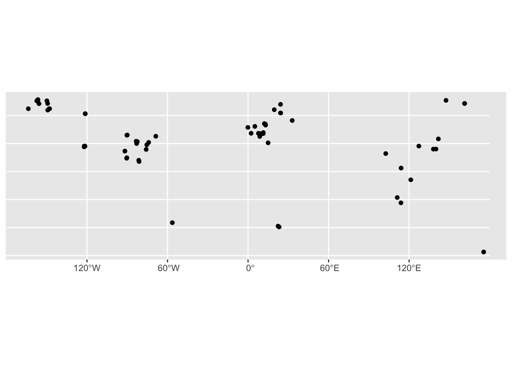
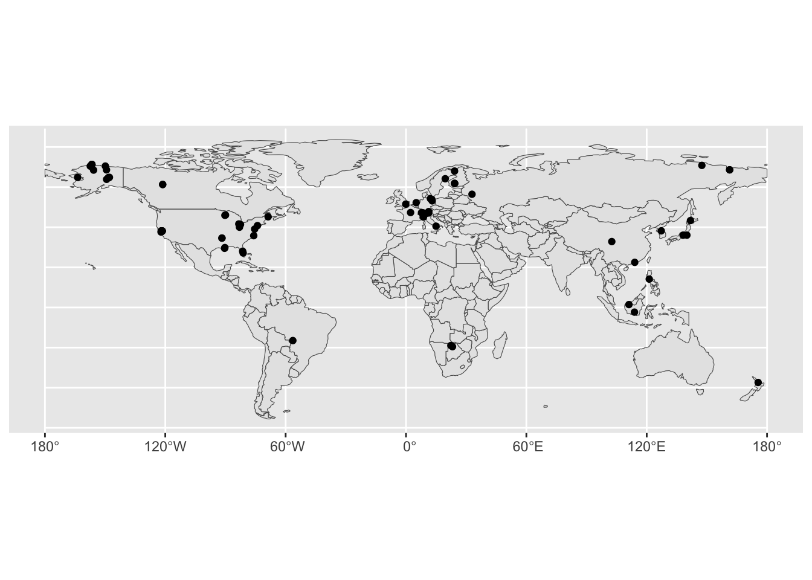

install.packages(zoo)Introduction to Data Integration in R
Data analysis often requires combining data from multiple sources, such as files, databases, APIs, or web scraping. R is a powerful and flexible tool for data integration, but it can also pose some challenges and pitfalls. In this workshop, you will learn some of the best ways to integrate data from multiple sources in R.
Workshop Goals:
- Understand techniques for data Integration.
- Obtain information from different data sources.
- Combine tabular and vector data.
- Combine tabular and raster data.
- Combine tabular data by an ID and time.
Choose the right package
R has many packages that can help you import, merge, and manipulate data from different sources. Some of the most popular and useful ones for tables include readr, dplyr, tidyr, and purrr. These packages are part of the tidyverse, a collection of packages that share a consistent and coherent syntax and philosophy for data analysis. For spatial data, the sf and terra packages are useful.
| Type of Data | Library |
|---|---|
| Tabular | tidyverse |
| Vector | sf |
| Raster | terra |
Use pipes and functions
One of the best features of the tidyverse is the pipe operator (%>%), which allows you to chain multiple functions together and pass the output of one function as the input of the next one. This way, you can create a data integration pipeline that is clear and logical, and that avoids intermediate variables and nested functions.
Check and validate data
Data integration can introduce errors or inconsistencies in your data, such as duplicates, mismatches, outliers, or invalid values. Therefore, it is important to check and validate your data before and after you integrate it from multiple sources. You can use various tools and techniques to do this, such as summary statistics, data visualization, data profiling, or data quality rules.
In this workshop you will begin to extract information about the FLUXNET CH4 tower sites.
Install Packages:
Load Libraries:
library(sf)
library(terra)
library(tidyverse)
library(ggplot2)
library(AOI)
library(zoo)Integrating information from simple features
Dataset: Data.zip
Import the file FluxNet_Sites_2024.csv and call it FluxNet
FluxNet <- read.csv('data/FluxNet_Sites_2024.csv')This dataset includes:
| Column Name | Description |
|---|---|
| SITE_ID | Unique site id |
| SITE_NAME | Site name |
| FLUXNET2015 | License information for the data for the two FLUXNET Products |
| FLUXNET-CH4 | License information for the data for the two FLUXNET Products |
| LOCATION_LAT | Location information |
| LOCATION_LONG | Location information |
| LOCATION_ELEV | Elevation in meters |
| IGBP | Vegetation type |
| MAT | Mean annual temperature in Celsius |
| MAP | Mean annual precipitation in mm |
Subset file to incluse only sites measuring methane:
FLUXNET.CH4 <- FluxNet %>% filter( FLUXNET.CH4 == "CC-BY-4.0" )Now that you have all of the sites measuring methane, convert FLUXNET.CH4 to a sf and call it FLUXNET.CH4.shp:
FLUXNET.CH4.shp <- st_as_sf(x = FLUXNET.CH4,
coords = c("LOCATION_LONG", "LOCATION_LAT"),
crs = 4326)
ggplot(data=FLUXNET.CH4.shp ) + geom_sf()
check the class and that the geometry is valid:
class(FLUXNET.CH4.shp)[1] "sf" "data.frame"st_is_valid(FLUXNET.CH4.shp) [1] TRUE TRUE TRUE TRUE TRUE TRUE TRUE TRUE TRUE TRUE TRUE TRUE TRUE TRUE TRUE
[16] TRUE TRUE TRUE TRUE TRUE TRUE TRUE TRUE TRUE TRUE TRUE TRUE TRUE TRUE TRUE
[31] TRUE TRUE TRUE TRUE TRUE TRUE TRUE TRUE TRUE TRUE TRUE TRUE TRUE TRUE TRUE
[46] TRUE TRUE TRUE TRUE TRUE TRUE TRUE TRUE TRUE TRUE TRUE TRUE TRUE TRUE TRUE
[61] TRUE TRUE TRUE TRUE TRUE TRUE TRUE TRUE TRUE TRUE TRUE TRUE TRUE TRUE TRUE
[76] TRUE TRUE TRUE TRUECreate a global sf and extract the country into the sf
global <- aoi_get(country= c("Europe","Asia" ,"North America", "South America", "Australia","Africa", "New Zealand"))
st_is_valid(global) [1] TRUE TRUE TRUE TRUE TRUE TRUE TRUE TRUE TRUE TRUE TRUE TRUE
[13] FALSE TRUE TRUE TRUE FALSE TRUE TRUE TRUE TRUE TRUE TRUE TRUE
[25] TRUE TRUE TRUE TRUE TRUE TRUE TRUE TRUE TRUE TRUE TRUE TRUE
[37] TRUE TRUE TRUE TRUE TRUE TRUE TRUE TRUE TRUE TRUE TRUE TRUE
[49] TRUE TRUE TRUE TRUE TRUE TRUE TRUE TRUE TRUE TRUE TRUE TRUE
[61] TRUE TRUE TRUE TRUE TRUE TRUE TRUE TRUE TRUE TRUE TRUE TRUE
[73] TRUE TRUE TRUE TRUE TRUE TRUE TRUE TRUE TRUE TRUE TRUE TRUE
[85] TRUE TRUE TRUE TRUE TRUE TRUE TRUE TRUE TRUE TRUE TRUE TRUE
[97] TRUE TRUE TRUE TRUE TRUE TRUE TRUE TRUE TRUE TRUE TRUE TRUE
[109] TRUE TRUE TRUE TRUE TRUE TRUE TRUE TRUE TRUE TRUE TRUE TRUE
[121] TRUE TRUE TRUE TRUE TRUE TRUE TRUE TRUE TRUE TRUE TRUE TRUE
[133] TRUE TRUE TRUE TRUE TRUE TRUE TRUE TRUE TRUE TRUE TRUE TRUE
[145] TRUE TRUE TRUE TRUE TRUE TRUE TRUE TRUE TRUE TRUE TRUE TRUE
[157] TRUE TRUE TRUE TRUE TRUE TRUE TRUE TRUE TRUE TRUE TRUE TRUE
[169] TRUE TRUE TRUEMake the CRS match:
FLUXNET.CH4.shp = st_transform(FLUXNET.CH4.shp, crs= '+init=epsg:4087')Warning in CPL_crs_from_input(x): GDAL Message 1: +init=epsg:XXXX syntax is
deprecated. It might return a CRS with a non-EPSG compliant axis order.global = st_transform(global, crs= '+init=epsg:4087') %>% st_make_valid()
ggplot() + geom_sf(data = global) + geom_sf(data = FLUXNET.CH4.shp) 
Use the st_intersect to extract the country of each tower site:
FLUXNET.CH4.shp$Country <- st_intersection( global, FLUXNET.CH4.shp)$nameWarning: attribute variables are assumed to be spatially constant throughout
all geometriesFLUXNET.CH4.shp$Country [1] "Austria" "Brazil"
[3] "Botswana" "Botswana"
[5] "Canada" "Canada"
[7] "Switzerland" "Switzerland"
[9] "Switzerland" "China"
[11] "Germany" "Germany"
[13] "Germany" "Germany"
[15] "Finland" "Finland"
[17] "Finland" "Finland"
[19] "France" "China"
[21] "Indonesia" "Italy"
[23] "Italy" "Japan"
[25] "Japan" "Japan"
[27] "South Korea" "Malaysia"
[29] "Netherlands" "New Zealand"
[31] "Philippines" "Russia"
[33] "Russia" "Russia"
[35] "Russia" "Sweden"
[37] "United Kingdom" "United States of America"
[39] "United States of America" "United States of America"
[41] "United States of America" "United States of America"
[43] "United States of America" "United States of America"
[45] "United States of America" "United States of America"
[47] "United States of America" "United States of America"
[49] "United States of America" "United States of America"
[51] "United States of America" "United States of America"
[53] "United States of America" "United States of America"
[55] "United States of America" "United States of America"
[57] "United States of America" "United States of America"
[59] "United States of America" "United States of America"
[61] "United States of America" "United States of America"
[63] "United States of America" "United States of America"
[65] "United States of America" "United States of America"
[67] "United States of America" "United States of America"
[69] "United States of America" "United States of America"
[71] "United States of America" "United States of America"
[73] "United States of America" "United States of America"
[75] "United States of America" "United States of America"
[77] "United States of America" "United States of America"
[79] "United States of America"Integrating information from rasters
Import the file GlobalSoil_grids.tif :
soil <- terra::rast("data/GlobalSoil_grids.tif" )
soilclass : SpatRaster
dimensions : 18000, 43200, 3 (nrow, ncol, nlyr)
resolution : 0.008333333, 0.008333333 (x, y)
extent : -180, 180, -60, 90 (xmin, xmax, ymin, ymax)
coord. ref. : lon/lat WGS 84 (EPSG:4326)
source : GlobalSoil_grids.tif
names : BulkDensity, PH, Nitrogen
min values : 0.1, 3.5, 0.0
max values : 1.8, 10.0, 28.3
unit : kg dm-3, H2O, kg-1 Transform FLUXNET.CH4.shp to the same CRS as soils:
FLUXNET.CH4.shp = st_transform(FLUXNET.CH4.shp, crs= crs(soil))
FLUXNET.CH4.shpSimple feature collection with 79 features and 9 fields
Geometry type: POINT
Dimension: XY
Bounding box: xmin: -163.7002 ymin: -37.3879 xmax: 175.5539 ymax: 71.3242
Geodetic CRS: WGS 84
First 10 features:
SITE_ID SITE_NAME FLUXNET2015 FLUXNET.CH4 LOCATION_ELEV IGBP
1 AT-Neu Neustift CC-BY-4.0 CC-BY-4.0 970 GRA
2 BR-Npw Northern Pantanal Wetland CC-BY-4.0 120 WSA
3 BW-Gum Guma CC-BY-4.0 950 WET
4 BW-Nxr Nxaraga CC-BY-4.0 950 GRA
5 CA-SCB Scotty Creek Bog CC-BY-4.0 280 WET
6 CA-SCC Scotty Creek Landscape CC-BY-4.0 285 ENF
7 CH-Cha Chamau CC-BY-4.0 CC-BY-4.0 393 GRA
8 CH-Dav Davos CC-BY-4.0 CC-BY-4.0 1639 ENF
9 CH-Oe2 Oensingen crop CC-BY-4.0 CC-BY-4.0 452 CRO
10 CN-Hgu Hongyuan CC-BY-4.0 3500 GRA
MAT MAP geometry Country
1 6.5 852.0 POINT (11.3175 47.1167) Austria
2 24.9 1486.0 POINT (-56.412 -16.498) Brazil
3 21.0 460.0 POINT (22.3711 -18.9647) Botswana
4 21.0 460.0 POINT (23.1792 -19.5481) Botswana
5 -2.8 388.0 POINT (-121.2984 61.3089) Canada
6 -2.8 387.6 POINT (-121.2992 61.3079) Canada
7 9.5 1136.0 POINT (8.4104 47.2102) Switzerland
8 2.8 1062.0 POINT (9.8559 46.8153) Switzerland
9 9.8 1155.0 POINT (7.7337 47.2864) Switzerland
10 1.5 747.0 POINT (102.59 32.8453) ChinaExtract soil information to FLUXNET.CH4.shp:
FLUXNET.CH4.shp$SOIL_BulkDensity = terra::extract(soil, FLUXNET.CH4.shp)$BulkDensity
FLUXNET.CH4.shp$SOIL_BulkDensity [1] 1.0 1.3 1.3 1.4 1.0 1.0 1.2 1.0 1.2 1.2 1.1 1.0 1.1 1.2 0.6 0.6 0.6 0.6 1.2
[20] 0.8 1.0 1.3 1.2 1.0 1.1 NA 1.3 1.1 0.9 0.9 1.2 0.9 0.9 0.9 0.6 0.6 NA 0.5
[39] 0.5 0.3 0.4 0.4 0.4 0.4 0.4 1.3 1.2 1.5 1.2 1.4 0.6 1.3 1.3 1.1 0.3 0.4 1.1
[58] 1.2 1.1 1.2 1.2 1.2 1.3 0.4 0.5 1.3 1.3 1.1 1.2 1.2 1.4 1.3 1.2 1.2 1.2 1.2
[77] 1.2 0.6 1.3FLUXNET.CH4.shp$SOIL_PH = terra::extract(soil, FLUXNET.CH4.shp)$PH
FLUXNET.CH4.shp$SOIL_PH [1] 5.9 5.6 6.4 6.6 6.3 6.3 6.3 5.0 6.3 6.0 5.3 5.9 5.8 6.4 4.4 4.8 4.8 4.8 5.3
[20] 5.3 4.7 7.4 6.7 5.3 5.9 NA 6.5 4.6 6.2 5.4 6.1 6.0 6.0 6.0 5.1 4.6 NA 5.9
[39] 5.6 5.1 5.6 5.6 5.6 5.4 5.4 6.2 6.1 6.4 5.6 7.1 5.1 5.8 5.8 4.6 5.1 4.9 5.5
[58] 5.4 4.9 5.2 5.9 6.9 4.5 5.4 5.0 6.2 6.2 5.1 7.0 7.0 6.6 5.1 6.2 6.0 6.0 6.2
[77] 6.1 5.8 6.8FLUXNET.CH4.shp$SOIL_Nitrogen = terra::extract(soil, FLUXNET.CH4.shp)$Nitrogen
FLUXNET.CH4.shp$SOIL_Nitrogen [1] 8.8 2.6 1.1 1.7 2.6 2.7 8.5 9.0 6.9 7.1 7.8 9.5 7.4 8.7 11.1
[16] 9.5 11.4 11.0 6.4 4.1 3.2 3.8 5.5 9.0 6.0 NA 5.7 4.4 7.5 6.1
[31] 4.0 7.8 7.9 6.3 10.6 8.9 NA 12.3 11.5 10.6 8.4 8.5 8.4 11.2 11.1
[46] 8.0 8.6 5.8 15.3 5.3 10.6 2.9 2.9 12.2 14.9 13.5 10.8 9.7 5.5 14.7
[61] 6.9 6.9 8.5 11.2 13.3 6.0 6.9 6.5 6.3 6.3 5.2 7.5 7.7 8.4 7.6
[76] 7.7 8.3 7.3 7.1Import the climate information (GlobalClimate.tif) :
climate <- terra::rast("data/GlobalClimate.tif" )
climateclass : SpatRaster
dimensions : 3343, 8640, 4 (nrow, ncol, nlyr)
resolution : 0.04166667, 0.04166667 (x, y)
extent : -180, 180, -55.625, 83.66667 (xmin, xmax, ymin, ymax)
coord. ref. : +proj=longlat +ellps=WGS84 +no_defs
source : GlobalClimate.tif
names : MAP, TMIN, TMAX, MAT
min values : 0.0, -50.4, -9.3, -27.10833
max values : 12390.2, 26.6, 53.7, 34.14167
unit : mm, Degrees C, Degrees C, Degrees C Transform FLUXNET.CH4.shp to the same CRS as climate:
FLUXNET.CH4.shp = st_transform(FLUXNET.CH4.shp, crs= crs(climate))
FLUXNET.CH4.shpSimple feature collection with 79 features and 12 fields
Geometry type: POINT
Dimension: XY
Bounding box: xmin: -163.7002 ymin: -37.3879 xmax: 175.5539 ymax: 71.3242
Geodetic CRS: GEOGCRS["unknown",
DATUM["unknown",
ELLIPSOID["WGS 84",6378137,298.257223563,
LENGTHUNIT["metre",1,
ID["EPSG",9001]]]],
PRIMEM["unknown",0,
ANGLEUNIT["degree",0.0174532925199433,
ID["EPSG",9122]]],
CS[ellipsoidal,2],
AXIS["latitude",north,
ORDER[1],
ANGLEUNIT["degree",0.0174532925199433,
ID["EPSG",9122]]],
AXIS["longitude",east,
ORDER[2],
ANGLEUNIT["degree",0.0174532925199433,
ID["EPSG",9122]]]]
First 10 features:
SITE_ID SITE_NAME FLUXNET2015 FLUXNET.CH4 LOCATION_ELEV IGBP
1 AT-Neu Neustift CC-BY-4.0 CC-BY-4.0 970 GRA
2 BR-Npw Northern Pantanal Wetland CC-BY-4.0 120 WSA
3 BW-Gum Guma CC-BY-4.0 950 WET
4 BW-Nxr Nxaraga CC-BY-4.0 950 GRA
5 CA-SCB Scotty Creek Bog CC-BY-4.0 280 WET
6 CA-SCC Scotty Creek Landscape CC-BY-4.0 285 ENF
7 CH-Cha Chamau CC-BY-4.0 CC-BY-4.0 393 GRA
8 CH-Dav Davos CC-BY-4.0 CC-BY-4.0 1639 ENF
9 CH-Oe2 Oensingen crop CC-BY-4.0 CC-BY-4.0 452 CRO
10 CN-Hgu Hongyuan CC-BY-4.0 3500 GRA
MAT MAP geometry Country SOIL_BulkDensity SOIL_PH
1 6.5 852.0 POINT (11.3175 47.1167) Austria 1.0 5.9
2 24.9 1486.0 POINT (-56.412 -16.498) Brazil 1.3 5.6
3 21.0 460.0 POINT (22.3711 -18.9647) Botswana 1.3 6.4
4 21.0 460.0 POINT (23.1792 -19.5481) Botswana 1.4 6.6
5 -2.8 388.0 POINT (-121.2984 61.3089) Canada 1.0 6.3
6 -2.8 387.6 POINT (-121.2992 61.3079) Canada 1.0 6.3
7 9.5 1136.0 POINT (8.4104 47.2102) Switzerland 1.2 6.3
8 2.8 1062.0 POINT (9.8559 46.8153) Switzerland 1.0 5.0
9 9.8 1155.0 POINT (7.7337 47.2864) Switzerland 1.2 6.3
10 1.5 747.0 POINT (102.59 32.8453) China 1.2 6.0
SOIL_Nitrogen
1 8.8
2 2.6
3 1.1
4 1.7
5 2.6
6 2.7
7 8.5
8 9.0
9 6.9
10 7.1Look at the data that is available in climate:
names(climate)[1] "MAP" "TMIN" "TMAX" "MAT" Extract climate information to FLUXNET.CH4.shp:
FLUXNET.CH4.shp$MAP = terra::extract(climate, FLUXNET.CH4.shp)$MAP
FLUXNET.CH4.shp$TMIN = terra::extract(climate, FLUXNET.CH4.shp)$TMIN
FLUXNET.CH4.shp$TMAX = terra::extract(climate, FLUXNET.CH4.shp)$TMAX
FLUXNET.CH4.shp$MAT = terra::extract(climate, FLUXNET.CH4.shp)$MAT
FLUXNET.CH4.shp$MAP [1] 1000.3 1322.5 447.9 418.3 430.0 430.0 1208.7 1093.9 1151.7 696.5
[11] 591.8 608.0 1104.9 620.9 676.6 551.0 673.7 678.9 709.1 1854.9
[21] 2388.6 1047.4 715.0 1128.5 1353.4 1191.7 1289.0 3475.8 865.8 1299.9
[31] 2002.7 175.6 175.6 199.7 715.2 627.6 657.5 142.9 115.9 144.4
[41] 290.0 290.0 290.0 118.0 118.0 392.8 386.1 872.4 1233.6 406.5
[51] 421.5 1275.6 1275.6 1091.0 193.3 259.5 1568.0 1577.7 829.3 1222.2
[61] 1204.9 362.9 1322.4 118.0 427.1 968.5 921.8 822.6 346.8 346.8
[71] 543.0 1130.0 377.1 377.1 377.1 377.1 377.1 293.5 902.0FLUXNET.CH4.shp$TMIN [1] -7.2 14.7 8.2 9.0 -26.9 -26.9 -2.3 -7.8 -2.0 -17.8 -2.6 -1.3
[13] -4.0 -2.3 -11.6 -17.8 -11.7 -11.6 0.3 12.1 23.0 5.5 -2.3 -11.6
[25] -2.2 -7.3 -11.3 22.5 0.2 4.1 21.7 -40.2 -40.2 -37.6 -10.7 -13.4
[37] 2.2 -32.9 -30.0 -29.6 -25.2 -25.2 -25.2 -30.0 -30.0 3.0 3.3 -7.9
[49] 8.6 5.3 -22.2 0.1 0.1 -15.4 -28.1 -26.9 6.6 6.0 -16.8 9.7
[61] -4.2 3.6 2.0 -30.0 -20.6 -6.4 -7.1 -16.7 3.6 3.6 3.7 -3.4
[73] 3.2 3.2 3.2 3.2 3.2 -25.0 -7.2FLUXNET.CH4.shp$TMAX [1] 19.6 34.1 35.6 35.5 23.2 23.2 24.7 16.1 24.5 18.8 22.6 21.0 23.6 21.9 21.5
[16] 18.0 21.8 21.6 25.7 32.0 32.2 30.5 29.4 25.3 30.2 27.7 28.2 32.3 22.2 23.8
[31] 33.1 20.1 20.1 15.4 23.1 20.1 23.5 12.1 8.7 13.3 22.4 22.4 22.4 9.4 9.4
[46] 31.6 31.4 28.8 33.3 24.6 19.4 33.2 33.2 26.0 16.9 16.0 32.5 32.5 24.7 33.7
[61] 29.7 30.6 30.9 9.4 16.2 29.4 28.3 24.6 30.9 30.9 29.8 30.2 31.2 31.2 31.2
[76] 31.2 31.2 22.3 28.3FLUXNET.CH4.shp$MAT [1] 5.3000002 25.4583340 23.7000008 23.9291668 -2.4583333 -2.4583333
[7] 9.8541670 3.4625001 9.5000000 2.7291667 8.5916662 8.8041668
[13] 8.7208338 8.6374998 3.4875000 -0.9458333 3.5250001 3.4875000
[19] 11.4333334 23.0208340 27.5333328 16.7250004 12.7208338 6.9958334
[25] 14.4083338 10.0500002 10.3291664 27.1291676 10.0583334 13.9125004
[31] 27.0041676 -11.6458330 -11.6458330 -13.5208330 4.7874999 2.1708333
[37] 11.3500004 -11.0791664 -11.2916670 -9.6458330 -2.1958334 -2.1958334
[43] -2.1958334 -11.1958332 -11.1958332 15.5958338 15.6083336 9.9541664
[49] 22.2041664 14.9666662 -2.7583334 16.9291668 16.9291668 5.9833331
[55] -8.2500000 -7.8458333 20.5458336 20.2458324 4.4291668 22.8458328
[61] 12.2375002 15.5166664 16.7333336 -11.1958332 -2.6541667 11.1958332
[67] 10.1333332 4.6458335 15.6875000 15.6875000 15.4750004 13.1999998
[73] 15.4708338 15.4708338 15.4708338 15.4708338 15.4708338 -2.2583334
[79] 10.1416664Import elevation information (Elevation.tif):
elevation <- terra::rast("data/Elevation.tif" )
elevationclass : SpatRaster
dimensions : 4320, 8640, 1 (nrow, ncol, nlyr)
resolution : 0.04166667, 0.04166667 (x, y)
extent : -180, 180, -90, 90 (xmin, xmax, ymin, ymax)
coord. ref. : lon/lat WGS 84 (EPSG:4326)
source : Elevation.tif
name : wc2.1_2.5m_elev
min value : -415
max value : 7412
unit : m Transform FLUXNET.CH4.shp to the same CRS as elevation:
FLUXNET.CH4.shp = st_transform(FLUXNET.CH4.shp, crs= crs(elevation))Look at the data that is available in elevation:
names(elevation)[1] "wc2.1_2.5m_elev"Extract elevation information to FLUXNET.CH4.shp:
FLUXNET.CH4.shp$ELEVATION = terra::extract(elevation, FLUXNET.CH4.shp)$wc2.1_2.5m_elev
FLUXNET.CH4.shp$ELEVATION [1] 1445 126 981 950 244 244 410 1738 462 3506 89 7 592 11 167
[16] 320 172 180 157 5 15 3 84 15 18 853 174 21 -2 7
[31] 33 4 4 5 262 239 32 3 2 17 120 120 120 5 5
[46] -4 -5 177 20 -1 657 64 64 67 923 575 3 1 486 11
[61] 3 2 12 5 54 238 175 473 4 4 3 5 -4 -4 -4
[76] -4 -4 144 173Joining tables
We can combine columns from two (or more) tables together. This can be achieved using the join family of functions in dplyr. There are different types of joins that will result in different outcomes.
inner_join() includes all rows that appear in both the first data frame (x) and the second data frame (y).
left_join() returns all rows from x based on matching rows on shared columns in y. right_join() is the companion to left_join(), but returns all rows included in y based on matching rows on shared columns in x.
Import APPEEARS file where I requested MODIS NDVI and EVI data for all FLUXNET_sites (Data/ENV720-MOD13A3-061-results.csv):
FLUXNET <- read.csv("data/ENV720-MOD13A3-061-results.csv")
names(FLUXNET) [1] "ID"
[2] "Latitude"
[3] "Longitude"
[4] "Date"
[5] "MODIS_Tile"
[6] "MOD13A3_061_Line_Y_1km"
[7] "MOD13A3_061_Sample_X_1km"
[8] "MOD13A3_061__1_km_monthly_EVI"
[9] "MOD13A3_061__1_km_monthly_NDVI"
[10] "MOD13A3_061__1_km_monthly_VI_Quality"
[11] "MOD13A3_061__1_km_monthly_VI_Quality_bitmask"
[12] "MOD13A3_061__1_km_monthly_VI_Quality_MODLAND"
[13] "MOD13A3_061__1_km_monthly_VI_Quality_MODLAND_Description"
[14] "MOD13A3_061__1_km_monthly_VI_Quality_VI_Usefulness"
[15] "MOD13A3_061__1_km_monthly_VI_Quality_VI_Usefulness_Description"
[16] "MOD13A3_061__1_km_monthly_VI_Quality_Aerosol_Quantity"
[17] "MOD13A3_061__1_km_monthly_VI_Quality_Aerosol_Quantity_Description"
[18] "MOD13A3_061__1_km_monthly_VI_Quality_Adjacent_cloud_detected"
[19] "MOD13A3_061__1_km_monthly_VI_Quality_Adjacent_cloud_detected_Description"
[20] "MOD13A3_061__1_km_monthly_VI_Quality_Atmosphere_BRDF_Correction"
[21] "MOD13A3_061__1_km_monthly_VI_Quality_Atmosphere_BRDF_Correction_Description"
[22] "MOD13A3_061__1_km_monthly_VI_Quality_Mixed_Clouds"
[23] "MOD13A3_061__1_km_monthly_VI_Quality_Mixed_Clouds_Description"
[24] "MOD13A3_061__1_km_monthly_VI_Quality_Land.Water_Mask"
[25] "MOD13A3_061__1_km_monthly_VI_Quality_Land.Water_Mask_Description"
[26] "MOD13A3_061__1_km_monthly_VI_Quality_Possible_snow.ice"
[27] "MOD13A3_061__1_km_monthly_VI_Quality_Possible_snow.ice_Description"
[28] "MOD13A3_061__1_km_monthly_VI_Quality_Possible_shadow"
[29] "MOD13A3_061__1_km_monthly_VI_Quality_Possible_shadow_Description" Subset the FLUXNET dataset to include only the columns of interest and rename them:
FLUXNET.sub <- FLUXNET %>% select( "ID",
"Date",
"MOD13A3_061__1_km_monthly_EVI", "MOD13A3_061__1_km_monthly_NDVI", "MOD13A3_061__1_km_monthly_VI_Quality") %>%
rename( SITE_ID = ID,
EVI = MOD13A3_061__1_km_monthly_EVI,
NDVI = MOD13A3_061__1_km_monthly_NDVI,
QAQC = MOD13A3_061__1_km_monthly_VI_Quality ) %>% filter( QAQC > 0)
names(FLUXNET.sub)[1] "SITE_ID" "Date" "EVI" "NDVI" "QAQC" Make the FLUXNET.CH4.shp vector a dataframe:
FLUXNET_CH4 <- as.data.frame( FLUXNET.CH4.shp)Identify the column that you should use to join the datasets FLUXNET_CH4 and FLUXNET.sub:
FLUXNET_CH4$SITE_ID
FLUXNET.sub$SITE_IDUse left_join because you want to keep all the data from FLUXNET_CH4 and only the sites in FLUXNET.sub that match the sites in FLUXNET_CH4:
FLUXNET_CH4_final <- FLUXNET_CH4 %>% left_join( FLUXNET.sub, by= 'SITE_ID')Check to make sure the list of sites matches:
length( unique(FLUXNET_CH4$SITE_ID))[1] 79length(unique(FLUXNET_CH4_final$SITE_ID))[1] 79Import the monthly FLUX data:
load( "data/FLUXNET_FLUXES.RDATA")Look at the flux file “FLUXNET.flux”:
summary( FLUXNET.flux) YearMon SITE P_F TA_F
Min. :2006 Length:2370 Min. : 0.00 Min. :-37.188
1st Qu.:2014 Class :character 1st Qu.: 14.42 1st Qu.: 2.863
Median :2015 Mode :character Median : 43.10 Median : 11.123
Mean :2015 Mean : 69.08 Mean : 9.543
3rd Qu.:2017 3rd Qu.: 84.12 3rd Qu.: 17.540
Max. :2019 Max. :1094.02 Max. : 31.280
VPD_F NEE_F_gC FCH4_F_gC
Min. : 0.000 Min. :-383.426 Min. :-1.8194
1st Qu.: 1.635 1st Qu.: -24.661 1st Qu.: 0.1008
Median : 3.982 Median : 2.918 Median : 0.4034
Mean : 4.763 Mean : 3.815 Mean : 1.3906
3rd Qu.: 6.722 3rd Qu.: 19.432 3rd Qu.: 1.4318
Max. :29.075 Max. :1251.787 Max. :28.3012 names(FLUXNET.flux)[1] "YearMon" "SITE" "P_F" "TA_F" "VPD_F" "NEE_F_gC"
[7] "FCH4_F_gC"# Make SITE ID:
FLUXNET.flux$SITE_ID <- FLUXNET.flux$SITE
FLUXNET.flux$SITE_ID
# This is a good column to join based on:
FLUXNET.flux$YearMon
FLUXNET.flux$YearMonIn your site file, convert the date to Year-Month and use this column to join it with the flux file “FLUXNET.flux”:
names(FLUXNET_CH4_final) [1] "SITE_ID" "SITE_NAME" "FLUXNET2015" "FLUXNET.CH4"
[5] "LOCATION_ELEV" "IGBP" "MAT" "MAP"
[9] "geometry" "Country" "SOIL_BulkDensity" "SOIL_PH"
[13] "SOIL_Nitrogen" "TMIN" "TMAX" "ELEVATION"
[17] "Date" "EVI" "NDVI" "QAQC" summary( FLUXNET_CH4_final$Date) Length Class Mode
12264 character character # Format as a Date:
FLUXNET_CH4_final$Date.f <-FLUXNET_CH4_final$Date %>% as.Date(format='%Y-%m-%d')
# Format as a Yearmon:
FLUXNET_CH4_final$YearMon <- FLUXNET_CH4_final$Date.f %>% zoo::as.yearmon( "%m-%Y")
class(FLUXNET_CH4_final$YearMon)[1] "yearmon"Join the two files:
fluxes_month <- FLUXNET.flux %>% left_join(FLUXNET_CH4_final , by = c ('YearMon', 'SITE_ID'))Save your file:
save(fluxes_month, file="data/products/Monthly_Fluxes.RDATA" )You are now prepared to take data from different sources to build a file to explore patterns in methane infrastructure. Take note of the difference between joining site based static data versus site based data that changes over time. In your next in class assessment, you will build a file with all of the data you want to use to develop your methane model. To prepare for this, find and obtain your data sources.